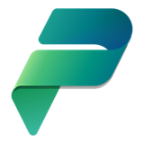
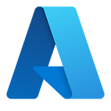

Power Platform Development
Canvas Apps, Model-Driven Apps, Power Fx, Dataverse, Business Process Flows und Power Automate Cloud/Desktop Flows.
Patrick Kranig
Ich bin Patrick Kranig, Fachinformatiker für Anwendungsentwicklung mit Schwerpunkt Microsoft 365, Power Platform und Azure.
Ich verbinde Softwareentwicklung, Beratung und Prozessverständnis: von Power Apps und Power Automate über Dataverse, SharePoint Online und Power BI bis C#, SQL, Azure DevOps und Dynamics 365. Besonders stark bin ich dort, wo Fachbereiche konkrete Abläufe digitalisieren wollen und daraus robuste, wartbare Lösungen entstehen sollen.
Aus Rollen als Principal Technical Consultant, Software Architect, Consultant, Trainer und Entwickler bringe ich Erfahrung in Remote-Setups, hybriden Teams und direkter Zusammenarbeit mit Anwenderinnen, Anwendern und technischen Stakeholdern mit.


Canvas Apps, Model-Driven Apps, Power Fx, Dataverse, Business Process Flows und Power Automate Cloud/Desktop Flows.
SharePoint Online, Teams, Forms, Exchange Online, Dynamics 365 Sales sowie Business Central/NAV-nahe Beratung und Support.
Azure Administration, Azure DevOps, Azure Data Factory, SQL-Datenbanken, Datenmodellierung und Integrationsszenarien.
C#, JavaScript, HTML/CSS, GitHub, Schnittstellen, Prozessmodellierung und saubere Übergabe an Betrieb oder Fachbereiche.
Principal Technical Consultant mit Schwerpunkt Microsoft & Azure, 100% remote aus Leipzig.
Software Architect im Microsoft-Umfeld, hybrid mit Fokus auf Architektur, Umsetzung und Beratung.
Consultant, Trainer und Fachinformatiker Anwendungsentwicklung mit Schwerpunkt Microsoft Power Platform.
Anwendungsentwicklung im Microsoft-Umfeld mit Praxis in Entwicklung, Support und Kundenanforderungen.
Auswahl nach Lebenslauf und Kompetenzprofil:
Die wichtigsten Bewerbungsunterlagen liegen direkt im Repository und öffnen sich als PDF.
Ich freue mich über passende Rollen in Entwicklung, Beratung, Architektur und Microsoft-Power-Platform-Projekten. Standort ist Leipzig, remote oder hybrid nach Absprache.